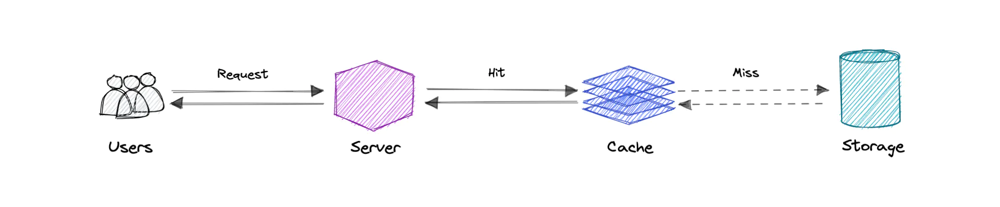
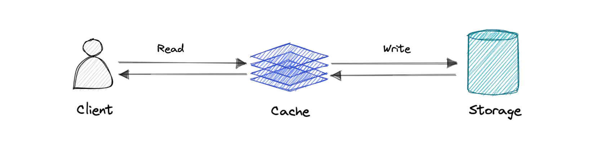
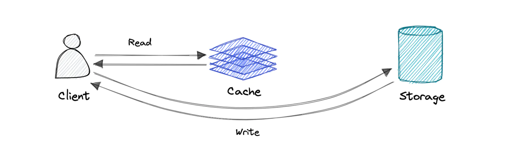
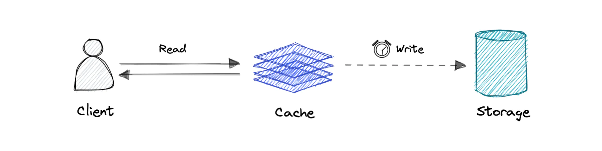
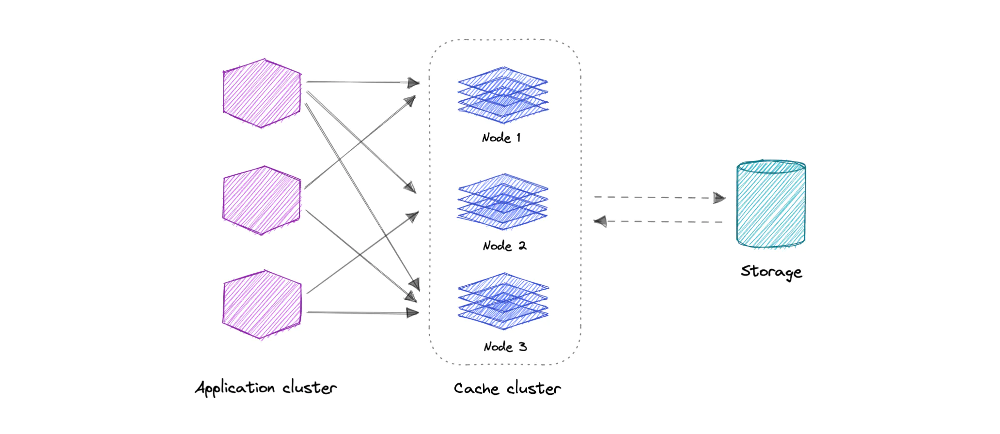
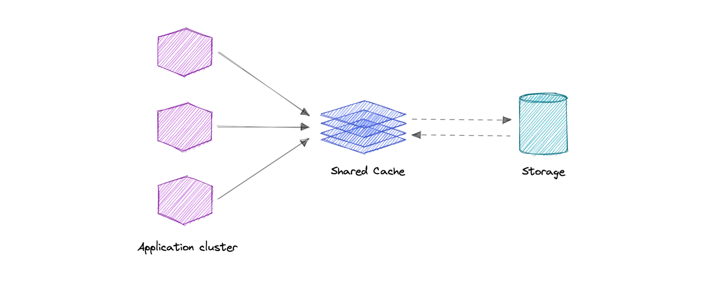

“计算机科学只存在两个难题：缓存失效和命名。” ——Phil KarIton

缓存的主要目的是通过减少对底层慢速存储层的访问，提高数据的检索性能，以空间换取时间，缓存通常是临时存储一个数据的子集，而数据库中的数据通常是完整且持久的。
缓存利用了「最近被请求的数据很可能再次被请求」的原则。
缓存和内存
与计算机的内存类似，缓存是一种紧凑的、高性能内存，它以层的方式存储数据，从第一层开始，依次递进，这些层被标记为 L1、L2、L3……，依此类推。在需要时，缓存可以写入数据，比如在更新场景下，新的内容需要写入到缓存中替换掉旧内容。
无论读缓存还是写缓存，都是一次执行一个块。每个块都有一个标签，这个标签表示数据在缓存中的存储位置。当从缓存中请求数据时，会通过标签进行搜索，首先在第一层（L1）内存中搜索，如果没有找到，就会在拥有更多数据的 L2 中进行搜索。如果在 L2 中也没有找到数据，就继续在 L3 搜索，然后是 L4，以此类推，直到找到数据为止，然后读取并加载数据。如果在缓存中没有找到数据，那么就把它写进缓存中，以便下次快速检索。
缓存命中和缓存缺失
缓存命中
「缓存命中」描述的是内容成功从缓存中找到的情况。
标签在内存中快速查询，当数据被找到并成功读取时，我们称之为「缓存命中」。
冷、温、热缓存
缓存命中还可以区分为冷、温、热，不同情况表示不同的数据读取速度。
「热缓存」是指以最快的速度从内存中读取数据的情况，发生在数据从 L1 检索的时候。
「冷缓存」是以最慢的速度读取数据，尽管如此，它仍然是成功从缓存中读出的（数据只是在内存层次中的较低位置被发现，比如在 L3，或者更低的位置），所以仍然被认为是一次缓存命中。
「温缓存」是用来描述在 L2 或 L3 找到数据的情况。温缓存没有热缓存那么快，但要比冷缓存快。一般来说，称一个缓存为温缓存是用来表达它比热缓存慢，更接近于冷缓存。
缓存缺失
「缓存缺失」指的是在搜索内存时没有找到数据的情况。当这种情况发生时，内容会被转移并写入缓存。
缓存失效
「缓存失效」是一个过程，计算机系统将缓存项声明为无效，并将其删除或替换。如果数据被修改了，就应该在缓存中失效，否则会造成应用行为的不一致。
有三种缓存系统：
写入式缓存（Write-through）

数据同时被写入缓存和相应的数据库中。
优点：快速检索，缓存和存储之间的数据完全一致。
缺点：写操作的延迟较高。
绕写式缓存（Write-around or Write-aside）

直接写到数据库或永久存储，绕过缓存。
优点：可以减少写操作延迟。
缺点：增加了缓存失效。在缓存失效的情况下，缓存系统必须从数据库中读取信息。因此，在应用程序快速写入和重新读取信息的情况下，这可能导致更高的读取延迟。读取发生在较慢的后端存储中并经历较高的延迟。
回写缓存（Write-back or Write-behind）

只对缓存层进行写入，一旦写入缓存完成，就会确认写入。之后，缓存异步地将这个写入同步到数据库中。
有点：降低写密集应用的延迟并提高吞吐量。
缺点：在缓存层崩溃的情况下，存在数据丢失的风险。我们可以通过让一个以上的副本确认缓存写入成功改善这个问题。
淘汰策略
以下是一些最常见的缓存淘汰策略：
- 先入先出（FIFO），缓存优先淘汰最早访问的项，而不考虑它之前被访问的频率或次数。
- 后进先出（LIFO），缓存优先淘汰最近访问的项，而不考虑它之前被访问的频率或次数。
- 最近最少使用（LRU），优先淘汰最近使用最少的项。
- 最近使用（MRU），与 LRU 相反，首先淘汰最近使用的项。
- 最不经常使用（LFU），计算一个项的使用频率，优先淘汰那些使用频率最低的项。
- 随机淘汰（RR），随机选择一个候选项，必要时淘汰它以腾出空间。
分布式缓存

分布式缓存是一种系统，它将多台联网计算机的随机存取存储器（RAM）集中到一个单一内存数据存储中，用作数据缓存，以提供对数据的快速访问。
虽然传统中的大部分缓存都在一个物理服务器或硬件组件中，但通过将多台计算机连接在一起，分布式缓存可以超越单个计算机的内存限制。
全局缓存

顾名思义，我们将有一个单一的共享缓存，所有的应用节点都访问这个缓存。当请求的数据在全局缓存中找不到时，缓存负责从底层数据存储中查找缺失的数据。
使用案例
在现实世界中缓存有许多使用场景，如：
- 数据库缓存
- 内容分发网络(CDN)
- 域名系统（DNS）缓存
- API 缓存
什么时候不使用缓存？
我们也来看看在哪些情况下不应该使用缓存：
- 当访问缓存的时间和访问主数据存储的时间一样长时，缓存就没有用了。
- 当请求的重复性较低（随机性较高）时，缓存的作用就不大了，因为缓存的高性能来自于重复的内存访问。
- 当数据经常变化时，缓存没有帮助，因为当缓存版本不同步时就需要访问主数据存储。
另外需要注意的是，缓存不应该被用作永久的数据存储。大部分缓存都是在易失性内存中实现的，因为它的速度更快，因此缓存应该被认为是临时性的。
优点
以下是缓存的几个优点：
- 提高性能
- 减少延时
- 减少数据库的负载
- 降低网络成本
- 增加读吞吐量
实例
下面是一些常用的缓存技术：